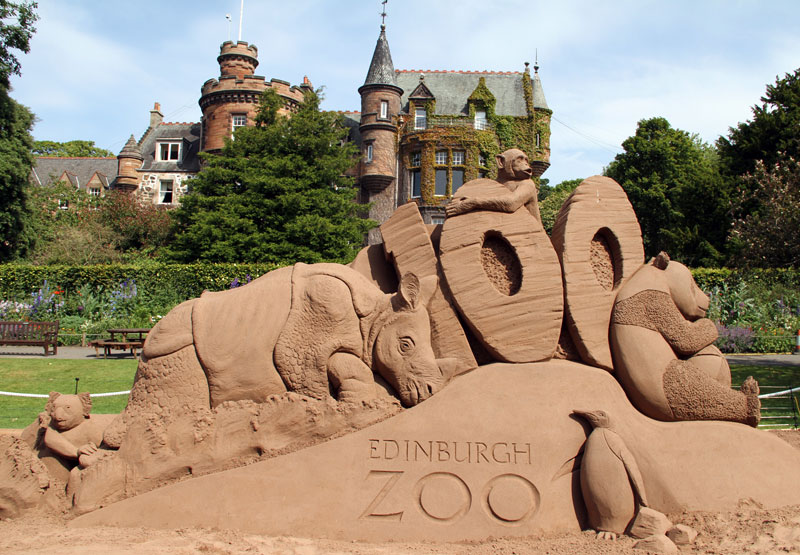

Geschiedenis
Edinburgh is een ontstaan door een groot fort dat gebouwd op Castle Rock, dit is de rots die nu nog steeds het centrum van de stad domineert. In de 7de eeuw kregen de Engelsen dit deel van Schotland in handen. Zij bouwden het fort en gaven de plaats de naam Eiden's Burgh. Burgh betekend in het oud Engels fort waardoor de naam onstond.

Na de Tweede Wereldoorlog legde de stad weer meer de nadruk op zijn status als intellectueel en cultureel centrum. Het Edinburgh International Festival en het Edinburgh Fringe Festival dateren beide uit 1947 en de universiteit van Edinburg ontwikkelde zich tot een instelling met veel internationaal aanzien. In 1999 kwam het nieuwe Schotse parlement voor de eerste keer samen in Edinburgh.

Cultuur
Edinburgh is bekend van het internationale Edinburgh Festival, een combinatie van diverse muziek- , opera-, dans- en theateruitvoeringen, dat in de zomer vele toeristen trekt. Op dit internationaal kunstfestival treden de beroemdste kunstenaars en ensembles van de wereld op.
In augustus wordt ieder jaar de Royal Edinburgh Military Tattoo gehouden, een wereldvermaarde taptoe waar legeronderdelen uit de hele wereld aan deelnemen. Ten minste eenmaal tijdens de vaker uitgevoerde taptoe komt Koningin Elizabeth II kijken. Deze militaire muziekparade vindt in de avonduren plaats op het wandelplein voor Edinburgh Castle met Pipe Bands die doedelzak spelen en trommelen. Er paraderen traditionele regimenten en motor- en luchtlandingsdivisies doen een reeks stunts. Op het einde wordt het Schotse lied Auld Lang Syne gezongen.
Bezienswaardigheden
Edinburgh Castle
Het prachtige kasteel van Edinburgh toornt hoog boven de stad uit. Het kasteel wat al honderden jaren oud is, is namelijk op een rots is gebouwd. Vanuit het kasteel heb je een fenomenaal uitzicht over de stad. Tijdens een rondleiding worden je alle intrigerende verhalen en geheimen van het kasteel verteld. Zo bezichtig je bijvoorbeeld de "Honeurs of Scotland" dit zijn de kroonjuwelen. Een bezoek aan dit indrukwekkende kasteel mag zeker niet ontbreken. Andere interessante kastelen in de omgeving zijn: Craigmillar Castle - Lauriston Castle - Tantallon Castle - Crichton Castle - Blackness Castle en Dirleton Castle.
Hollywood Palace
Deze officiële residentie en tegenwoordig werkpaleis van het koningshuis van Schotland, staat aan het einde van de beroemde straat "Royal Mile" van Edinburgh. Deze straat loopt vanaf Edinburgh Castle naar dit vorstelijke onderkomen. Nog altijd worden hier plechtigheden en officiële koninklijke en hoogwaardigheidsbekleders ontvangen. Delen van dit paleis zijn open gesteld voor publiek.
St. Giles Cathedral
De stad staat vol met bijzondere oude architectuur. Eén daarvan is de St. Giles Cathedral. De toren is een opvallend kenmerk van de stad. Kort na de brand in 1385 die de kerk grotendeels verwoeste is het opgebouwd zoals we het nu kennen. Natuurlijk zijn sommige delen later weer vervangen of aangebouwd. De toren is uit de 15e eeuw. Het interieur is werkelijk imponerend.

Edinburgh Zoo
Voor een gezellige dag met de familie is het zeker aan te bevelen om de dierentuin van Edinburgh een bezoek te brengen. Het park is zeer mooi aangelegd en heeft veel diverse dieren te bewonderen. Er is een overdekt tropisch regenwoud, maar ook glow-in-the-dark schorpioenen en een heuse pinguïn parade.
Aanraders
Wanneer je opzoek bent naar een uniek hotel en niet claustrofobisch bent aangelegd is dit hostel helemaal geschikt voor jou. Maar anders is het CODE Hostel een leuke afwisseling van de vele standaard hotels die je in grote steden vind. Het CODE Hostel noemt zichzelf een nieuw boutique hostel dat innovatief, modern design combineert met traditionele materialen. Bijzonder aan CODE zijn de bedden. Je slaapt namelijk in zogenoemde pods. Het doet denken aan de bedcabines in slaaptreinen, maar dan wel stylish verantwoord.
Je kunt je bezoek aan Edinburgh beginnen in The Scotch Whisky Experience. Wat is immers een bezoek aan Edinburgh zonder een goede whisky tasting.
Een echt Brits diner in The Doric de oudste pub van de stad. Het pand komt uit de 17de eeuw en is al een pub sinds de 18de eeuws. De kaart is typisch engels pubfood. Een Sunday Roast voor je zondagslunch en natuurlijk de bekende fish & chips.